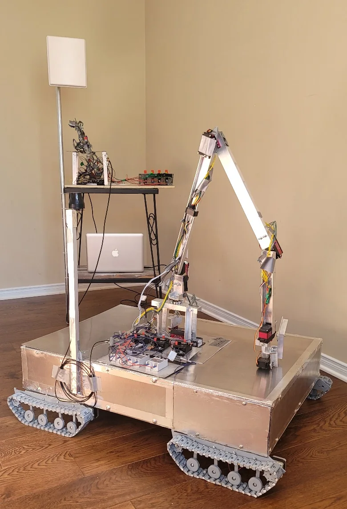

Gesture-mapped controller
Potentiometers measured each scale-arm joint. The handheld controls also provided propulsion, camera, gripper, and safety inputs.
Engineering Project Report
A six-axis robotic arm and tracked vehicle controlled through the operator’s physical movements.

System Overview
The operator moved a small articulated control arm fitted with potentiometers at each joint. Two Arduino controllers sampled those positions, mapped them to the full-size manipulator, and transmitted commands to the vehicle. This made multi-joint control more intuitive than assigning every axis to a separate joystick.
The mobile platform combined seven high-torque servos, four independently driven tracks, a two-axis camera turret, multi-voltage power distribution, active cooling, and remote interlocks. I designed the frame and drivetrain, fabricated the aluminum structure, wired the control system, and developed the firmware and serial protocol.
Technical Architecture
Potentiometers measured each scale-arm joint. The handheld controls also provided propulsion, camera, gripper, and safety inputs.
A purpose-built serial packet carried joint targets and vehicle commands between distributed Arduino controllers while preserving a predictable update loop.
HC-05 Bluetooth boards were modified with SMA connectors so external directional and omnidirectional antennas could replace their limited onboard antennas.
Four independently driven track modules allowed differential steering and distributed the vehicle load across a compact fabricated chassis.
Separate regulated rails supplied logic, high-current servos, drive motors, and auxiliary systems, with circuit protection and active cooling.
Physical and remote electrical interlocks prevented unintended operation and gave the operator a direct way to disable high-power motion.
Engineering Details